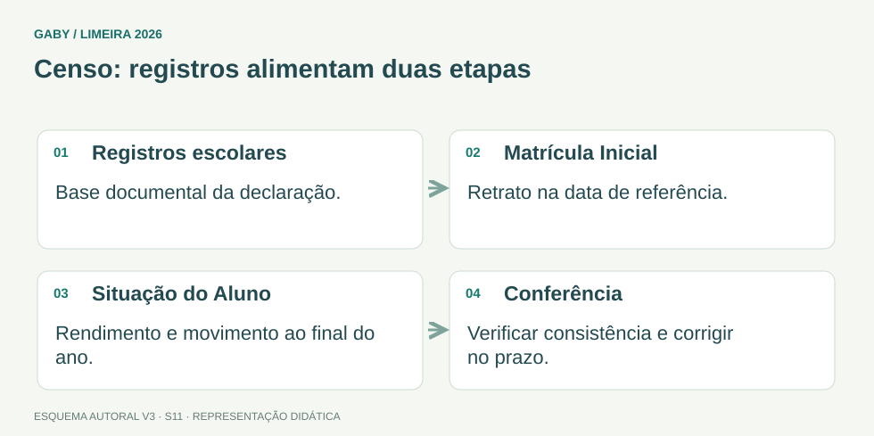

Objetivos do módulo
- Entender finalidade geral do Censo Escolar da Educação Básica.
- Reconhecer a importância de dados corretos de escola, turmas, matrículas, profissionais e alunos.
- Aplicar princípios de conferência, consistência e responsabilidade no fornecimento de informações.
- Relacionar censo, planejamento educacional e registros da secretaria.
- Citar o Decreto 6.425/2008 (arts. 2º, 4º, 5º e 6º) e explicar quem deve informar o Censo e quem responde pelos dados.
- Distinguir Matrícula Inicial e Situação do Aluno, a data de referência e o cronograma de cada edição.
- Usar corretamente os conceitos do Educacenso: perfis, níveis de acesso, cadastro, vínculo, admissão, fechamento e encerramento.
- Classificar a situação final do aluno (rendimento, movimento, falecido, concluinte) e calcular taxas de rendimento.
- Explicar como Ideb, Fundeb e acesso público usam os dados do Censo, com o cuidado exigido pela LGPD.
Censo: registros alimentam duas etapas

Descrição em texto do esquema
- Registros escolares: Base documental da declaração.
- Matrícula Inicial: Retrato na data de referência.
- Situação do Aluno: Rendimento e movimento ao final do ano.
- Conferência: Verificar consistência e corrigir no prazo.
Oficina visual · aplique o esquema
Por que uma transferência registrada pela escola precisa ser coerente com a informação declarada no Censo?
Atividade autoral complementar da V3. Registre sua resposta; a resolução está no arquivo de gabarito e revisão.
Mapa do conteúdo
- 1. O que é o Censo Escolar
- 2. Tipos de informação
- 3. Relação com escrituração escolar
- 4. Responsabilidade e correção
- 5. Uso das informações
- 6. Base legal do Censo Escolar
- 7. Data de referência e cronograma
- 8. Educacenso: perfis, níveis de acesso e suporte
- 9. Primeira etapa: cadastros e vínculos
- 10. Segunda etapa: Situação do Aluno
1. O que é o Censo Escolar
O Censo Escolar é o principal levantamento estatístico da educação básica brasileira. É realizado anualmente, coordenado pelo Inep em regime de colaboração com as secretarias estaduais, distrital e municipais e com participação das escolas públicas e privadas. Tem caráter declaratório e é organizado em duas etapas: a primeira reúne dados da matrícula inicial (estabelecimentos, gestores, turmas, estudantes e profissionais escolares em sala); a segunda registra movimento e rendimento ao final do ano letivo.
A declaração é obrigatória para as escolas de educação básica e a qualidade do censo depende da qualidade dos registros administrativos e acadêmicos que o alimentam. Diretores e dirigentes respondem pela veracidade das informações declaradas, conforme as regras do processo censitário.
Censo Escolar e Educacenso
Censo Escolar é a pesquisa. Educacenso é o sistema eletrônico do Inep pelo qual a pesquisa é respondida (o Decreto 6.425/2008, art. 7º, manda operacionalizar o censo por sistema eletrônico de informações). A prova pode usar um nome pelo outro, mas a ideia é a mesma: a escola declara, no sistema, os dados que tem em seus registros.
Quatro palavras resumem a pesquisa:
- Anual: acontece todo ano, em duas etapas.
- Declaratória: o Inep não visita cada escola para contar alunos; a escola declara, e responde pelo que declara.
- Obrigatória: todas as escolas públicas e privadas de educação básica devem responder.
- Em colaboração: coordenada pelo Inep e realizada em regime de colaboração com as secretarias estaduais, distrital e municipais de educação, com participação das escolas.
Quem faz o quê
O Inep apresenta assim a divisão de tarefas, com base na Portaria MEC nº 316/2007:
| Ator | Papel no Censo |
|---|---|
| Inep | Define e divulga o cronograma anual, disponibiliza o sistema e os instrumentos, controla a qualidade da informação, organiza e divulga os resultados. |
| Secretarias estaduais e municipais (gestores das redes) | Coordenam a coleta na rede, orientam e treinam os responsáveis nas escolas, acompanham prazos e respondem solidariamente pela veracidade dos dados. |
| Diretores e dirigentes das escolas | Prestam as informações no Educacenso e respondem pela veracidade do que foi declarado. |
Na escola, quem digita é um usuário cadastrado no Educacenso com nível que permita inserir dados (Executor ou Superusuário, ver seção 8): em geral, o secretário de escola ou outro responsável administrativo. Digitar não transfere a responsabilidade: o diretor continua respondendo pela veracidade, e as autoridades do Poder Executivo municipal respondem pela exatidão e fidedignidade dos dados da rede (Decreto 6.425/2008, art. 2º, § 1º).
2. Tipos de informação
O levantamento envolve informações sobre escolas, matrículas, turmas, etapas/modalidades, profissionais e características relevantes da oferta educacional. Os campos e calendários específicos devem ser conferidos nas orientações oficiais do ciclo correspondente.
O secretário não deve “estimar” dados quando existe registro oficial: deve usar fontes consistentes e conferir divergências.
As duas etapas da coleta
| Etapa | O que coleta | Quando |
|---|---|---|
| 1ª etapa: Matrícula Inicial | Escolas, gestores, turmas, alunos e profissionais escolares em sala de aula, como estavam na data de referência. | Coleta a partir da última quarta-feira de maio; o término é fixado pela portaria do ano. |
| 2ª etapa: Situação do Aluno | Rendimento (aprovado ou reprovado) e movimento (transferido ou deixou de frequentar), além de falecimento e outras situações, dos alunos declarados na 1ª etapa. | Depois do fim do ano letivo, em geral no início do ano seguinte (a do ano letivo de 2025 ocorreu em fevereiro e março de 2026). |
A 1ª etapa é um retrato da escola num dia fixo. A 2ª etapa conta o que aconteceu com cada aluno daquele retrato até o fim do ano letivo. Por isso rendimento nunca está na 1ª etapa, e a 2ª etapa não trata da estrutura física.
Questionários da primeira etapa
- Escola: caracterização e infraestrutura do estabelecimento, como abastecimento de água, energia, destinação do lixo, dependências físicas existentes (cozinha, refeitório, biblioteca, quadra, almoxarifado etc.), equipamentos para uso administrativo e para ensino e aprendizagem, e acesso à internet.
- Gestor escolar: identificação, cargo, formação, critério de acesso ao cargo e tipo de vínculo.
- Turma: etapa de ensino, tipo de mediação didático-pedagógica, componentes curriculares e tipo de turma (curricular, atendimento educacional especializado, atividade complementar).
- Aluno: identificação (CPF, nome, data de nascimento, filiação), deficiência, transtorno do espectro autista ou altas habilidades, e tipo de atendimento educacional especializado que realiza.
- Profissional escolar em sala de aula: identificação, escolaridade e função exercida na turma.
O Censo não recebe notas nem o controle diário de frequência: esses registros ficam na escola (diário de classe) e servem de base para declarar a situação final de cada aluno na 2ª etapa.
3. Relação com escrituração escolar
Matrícula registrada incorretamente, duplicidade, aluno transferido sem atualização ou turma cadastrada de forma inadequada podem produzir inconsistências. A escrituração escolar confiável reduz problemas no censo.
Antes de declarar dados, a unidade deve promover conferências de consistência conforme os procedimentos da rede e do sistema utilizado.
Registros que sustentam a declaração
O Inep orienta que os dados declarados tenham como base os registros administrativos e acadêmicos da escola: ficha de matrícula, diário de classe, livro de frequência, histórico escolar, sistemas eletrônicos de gestão, regimento escolar, projeto político-pedagógico, documentos de modulação de professores e de enturmação de alunos. Se não há documento, não há como sustentar o dado em uma verificação.
- Turmas de atendimento educacional especializado (AEE) e de atividade complementar também precisam de registro: das atividades realizadas, do desenvolvimento e da avaliação dos alunos e do controle de frequência, como nas turmas curriculares. Esses documentos resguardam a escola em verificações de órgãos de controle.
- Aluno em tratamento de saúde: pode ser declarado quando recebe atendimento educacional em regime hospitalar ou domiciliar. Declara-se a situação efetiva, com o registro desse atendimento.
Onde tirar dúvida sobre um campo
Primeiro, nos materiais do Inep da edição em curso: o Caderno de Conceitos e Orientações (define cada campo e traz orientações de preenchimento), as tabelas de apoio, os documentos específicos (educação especial, ensino médio e educação profissional, EJA), os vídeos tutoriais e as perguntas frequentes. Se a dúvida persistir, os contatos das coordenações estaduais do Censo, da Setec/MEC e do Inep estão no próprio Caderno. Formulário antigo, palpite de colega ou costume da escola não são fonte.
4. Responsabilidade e correção
Dados educacionais podem repercutir em estatísticas e políticas. Por isso, correções devem seguir janelas e procedimentos oficiais, com base documental. A pressa não justifica informação fictícia.
Quando houver dúvida sobre um campo, consulte manual/orientação oficial e responsável da rede em vez de preencher por interpretação pessoal.
Fechamento, retificação e encerramento
| Momento | O que acontece |
|---|---|
| Fechamento da 1ª etapa | O sistema apresenta as pendências da escola, que devem ser corrigidas ou, quando refletem a realidade, confirmadas (exemplo: componente curricular sem docente na data de referência). Escola que não faz o fechamento pode ter as matrículas desconsideradas. |
| Dados preliminares | Depois da coleta, o Inep publica os dados preliminares no Diário Oficial da União e o sistema reabre por 30 dias para conferência e retificação. |
| Publicação final | Encerrada a retificação, os dados finais são publicados. Para o Fundeb, a lei proíbe alterar os dados depois da publicação final (Lei 14.113/2020, art. 8º, § 7º). |
| Encerramento do ano escolar (2ª etapa) | Etapa obrigatória: o sistema mostra avisos e erros; não é possível encerrar com erros pendentes. Ao final, a escola visualiza, confere, imprime e guarda o recibo. |
| Retificar após o encerramento | Em “Encerramento do ano escolar”, usar “Retificar”, fazer a alteração e solicitar novo encerramento. |
A Lei do Fundeb (Lei 14.113/2020, art. 8º, § 5º) manda Estados, Distrito Federal e Municípios retificarem, quando necessário, os dados preliminares em até 30 dias da publicação, sob pena de responsabilização administrativa. Para a rede municipal, conferir os preliminares não é opcional.
5. Uso das informações
Dados consolidados ajudam a conhecer número de matrículas, oferta por etapa, características das escolas e outros indicadores. Servem de base para planejamento, monitoramento e decisões de política educacional.
Censo não substitui a escrituração escolar; ele utiliza e consolida informações produzidas pela rotina escolar.
Taxas de rendimento
O Inep calcula as taxas de rendimento de cada escola, rede e município com os dados da Situação do Aluno. Entram as matrículas do ensino fundamental e do ensino médio com situação “aprovado”, “reprovado” ou “deixou de frequentar” (chamada de abandono no cálculo). Matrículas da EJA e de classe especial não entram.
| Taxa | Fórmula | O que mostra |
|---|---|---|
| Aprovação | APR ÷ (APR + REP + ABA) × 100 | Percentual que alcançou os critérios mínimos para concluir a etapa no ano. |
| Reprovação | REP ÷ (APR + REP + ABA) × 100 | Percentual que não alcançou esses critérios. |
| Abandono | ABA ÷ (APR + REP + ABA) × 100 | Percentual que deixou de frequentar depois da data de referência. |
As três taxas somam 100%. O aluno transferido não entra na conta da escola de origem: sua situação final é informada pela escola que o admitiu e compõe a taxa dela. O falecido também fica fora. Matrícula sem situação final informada aumenta a taxa de não resposta, que mede a falta de informação.
Ideb
O Índice de Desenvolvimento da Educação Básica (Ideb), criado em 2007, é a medida de qualidade adotada pelo Decreto 6.094/2007 (art. 3º) e é calculado e divulgado pelo Inep. Ele junta, num número de 0 a 10, duas dimensões:
- Fluxo: um indicador de aprovação (P), entre 0 e 1, calculado com as taxas de aprovação da etapa, vindas do Censo Escolar.
- Aprendizagem: a nota média padronizada (N), de 0 a 10, obtida com as médias de desempenho em língua portuguesa e matemática no Saeb.
Ideb = N × P. Se a escola retém alunos para melhorar a prova, P cai; se aprova sem que aprendam, N cai. O Ideb é produzido e divulgado a cada dois anos. A aprovação que a secretaria declara na Situação do Aluno entra diretamente nesse índice.
Recursos: Fundeb e repasses federais
A Lei do Fundeb (Lei 14.113/2020, art. 8º) manda distribuir os recursos considerando exclusivamente as matrículas presenciais efetivas apuradas no censo escolar mais atualizado do Inep. O Inep informa ainda que as matrículas e os dados escolares do Censo servem de base para o repasse de recursos do governo federal. Consequência prática: aluno não declarado é matrícula que não conta para a rede; aluno inexistente ou duplicado distorce a distribuição e gera responsabilização.
Acesso público e proteção de dados
- Acesso público: a LDB, art. 5º, § 6º (incluído pela Lei 15.017/2024), incumbe ao poder público promover o acesso público às informações educacionais do censo anual e das avaliações da educação básica. O § 7º sujeita os sistemas de informações educacionais ao dever de transparência e à Lei de Acesso à Informação; o § 8º manda tratar e divulgar dados e microdados, sempre que possível, de forma anonimizada.
- Sigilo: o Decreto 6.425/2008, art. 6º, assegura o sigilo e a proteção dos dados pessoais apurados no censo e proíbe usá-los para fins estranhos à legislação educacional.
- LGPD (Lei 13.709/2018): vale para a prefeitura e para a escola. A coleta do Censo decorre de obrigação legal, e a LGPD admite o tratamento para cumprir obrigação legal (art. 7º, II) e, pela administração pública, para executar políticas públicas e competências legais (arts. 7º, III, e 23). Mesmo assim, devem ser respeitados os princípios de finalidade, necessidade e segurança (art. 6º), e os dados de crianças e adolescentes devem ser tratados em seu melhor interesse (art. 14).
Na rotina, isso significa: senha pessoal e intransferível, acesso só a quem trabalha com o Censo, nenhum dado de aluno enviado sem necessidade e aceite do Termo de Sigilo, Compromisso e Confidencialidade quando o sistema o exige (por exemplo, ao vincular o gestor).
6. Base legal do Censo Escolar
Todas as normas abaixo são federais de alcance nacional ou alcançam todas as escolas de educação básica do país; por isso valem para a rede municipal de Limeira. Datas e prazos de cada edição ficam em portarias do Inep (ver seção 7).
Decreto 6.425/2008 (censo anual da educação)
| Dispositivo | O que determina | Como cai |
|---|---|---|
| Art. 1º | O Inep realiza anualmente o censo escolar da educação básica e o censo da educação superior. | Quem realiza: Inep. Periodicidade: anual. |
| Art. 2º, caput | Censo da educação básica anual, em regime de colaboração entre União, Estados, DF e Municípios, em caráter declaratório, com coleta descentralizada, abrangendo todos os estabelecimentos públicos e privados; unidades de informação: alunos, turmas, escolas e profissionais da educação. | “Declaratório” descreve a coleta; não é nome de etapa. Unidades de informação não incluem “notas” nem “pais”. |
| Art. 2º, § 1º | As autoridades do Poder Executivo dos Estados, do DF e dos Municípios respondem pela exatidão e fidedignidade das informações, conforme suas competências. | A prefeitura responde pelos dados da rede municipal. |
| Art. 2º, § 2º | O representante legal da escola privada responde pela exatidão e fidedignidade, no limite de suas atribuições. | Escola privada também responde. |
| Art. 4º | Fornecer as informações do censo e para indicadores educacionais é obrigatório para todos os estabelecimentos públicos e privados de educação básica (na forma da LDB, art. 9º, V e § 2º). | Obrigatório, não facultativo. |
| Art. 5º | Toda instituição de educação, pública ou privada, com ou sem fins lucrativos, é obrigada a prestar as informações solicitadas pelo Inep. | Ser filantrópica ou sem fins lucrativos não dispensa. |
| Art. 6º | Sigilo e proteção dos dados pessoais apurados no censo; vedado o uso para fins estranhos à legislação educacional. | Liga-se à LGPD. |
| Arts. 7º e 8º | Operacionalização por sistema eletrônico, com campos que podem ser obrigatórios; Estados, DF e Municípios pactuam a cooperação e a repartição de responsabilidades. | Educacenso é o sistema; colaboração entre entes. |
LDB (Lei 9.394/1996)
| Dispositivo | O que determina | Como cai |
|---|---|---|
| Art. 9º, V e § 2º | A União coleta, analisa e dissemina informações sobre a educação e, para isso, tem acesso a todos os dados e informações necessários de todos os estabelecimentos e órgãos educacionais. | Fundamento da obrigação de informar (citado no Decreto 6.425, art. 4º). |
| Art. 5º, § 6º (Lei 15.017/2024) | Incumbe ao poder público promover, nos termos de regulamento, o acesso público às informações educacionais do censo anual e dos exames e sistemas de avaliação da educação básica. | Acesso é público, não restrito a escolas ou redes. |
| Art. 5º, §§ 7º e 8º (Lei 15.017/2024) | Sistemas de informações educacionais sujeitos à transparência e à Lei de Acesso à Informação; dados e microdados tratados e divulgados, sempre que possível, de forma anonimizada. | Transparência com proteção de dados pessoais. |
Decreto 6.094/2007 (Plano de Metas Compromisso Todos pela Educação)
| Dispositivo | O que determina | Como cai |
|---|---|---|
| Art. 3º, caput | A qualidade da educação básica é aferida pelo Ideb, calculado e divulgado periodicamente pelo Inep a partir dos dados de rendimento escolar combinados com o desempenho dos alunos, constantes do censo escolar e do Saeb. | Ideb combina Censo (aprovação) e Saeb (desempenho); nunca só um deles. |
| Art. 3º, parágrafo único | O Ideb é o indicador objetivo para verificar o cumprimento das metas do termo de adesão ao Compromisso. | Ideb serve para acompanhar metas. |
A adesão de Município, Estado ou DF ao Compromisso é voluntária (art. 4º). O Ideb, porém, é calculado pelo Inep para as escolas e redes avaliadas em todo o país.
Lei 14.113/2020 (Fundeb)
| Dispositivo | O que determina | Como cai |
|---|---|---|
| Art. 8º, caput | Para distribuir os recursos, consideram-se exclusivamente as matrículas presenciais efetivas, conforme o censo escolar mais atualizado do Inep. | Censo é base de repasse. |
| Art. 8º, § 5º | Estados, DF e Municípios devem, em até 30 dias da publicação dos dados preliminares, retificá-los quando necessário, sob pena de responsabilização administrativa. | Prazo de 30 dias para retificar. |
| Art. 8º, § 7º | É vedado alterar os dados depois da publicação final das informações do censo escolar. | Depois da publicação final, não se corrige para fins do Fundeb. |
LGPD (Lei 13.709/2018)
| Dispositivo | O que determina | Como cai |
|---|---|---|
| Art. 6º | Princípios do tratamento, entre eles finalidade, necessidade e segurança. | Usar só o necessário, para o fim do Censo, com proteção. |
| Art. 7º, II e III | Tratamento permitido para cumprir obrigação legal e, pela administração pública, para executar políticas públicas. | Consentimento não é a única base legal: a obrigação legal também autoriza o tratamento. |
| Art. 14, caput | Dados de crianças e adolescentes são tratados em seu melhor interesse. | Cuidado redobrado com dados de alunos. |
| Art. 23 | Pessoas jurídicas de direito público tratam dados para atender sua finalidade pública e cumprir competências legais. | Vale para a prefeitura e suas escolas. |
7. Data de referência e cronograma
Regra estável: a data de referência
A 1ª etapa retrata a escola na data de referência: a última quarta-feira de maio, instituída como Dia Nacional do Censo Escolar (Portaria MEC nº 264/2007, conforme o Inep). A coleta começa nesse dia. Importa o que existia na data de referência, não no dia em que o dado foi digitado: aluno que entrou em junho não aparece na Matrícula Inicial daquela escola; aluno que saiu em junho aparece, e sua saída é informada na 2ª etapa.
O que muda a cada edição
Períodos de coleta e de retificação são fixados por portaria do Inep a cada ano. Os dados abaixo foram conferidos na página de perguntas frequentes do Censo Escolar do Inep em 18/11/2026; numa edição futura, confira a portaria do ano.
| Edição | Etapa | Período | Ato |
|---|---|---|---|
| Censo Escolar 2026 | 1ª etapa (Matrícula Inicial); data de referência 27/05/2026 | Coleta de 27 de maio a 31 de julho de 2026; reabertura por 30 dias para conferência e retificação após a publicação dos dados preliminares no DOU | Portaria Inep nº 217, de 11/05/2026 |
| Censo Escolar 2025 | 2ª etapa (Situação do Aluno 2025) | Coleta de 19 de fevereiro a 30 de março de 2026; conferência e retificação de 31 de março a 20 de abril de 2026 | Portaria Inep nº 239/2025, retificada pela Portaria nº 41/2026 |
8. Educacenso: perfis, níveis de acesso e suporte
O acesso ao Educacenso combina duas ideias: o perfil diz quais escolas o usuário enxerga; o nível de acesso diz o que ele pode fazer nelas.
Perfis (abrangência)
| Perfil | Escolas que acessa |
|---|---|
| Inep | Todas as escolas do país. |
| Secretaria Estadual | Todas as escolas do estado. |
| Setec/MEC | Escolas federais vinculadas à Secretaria de Educação Profissional e Tecnológica do MEC. |
| Órgão Regional | Escolas vinculadas às regionais das secretarias estaduais. |
| Secretaria Municipal | Escolas municipais e escolas privadas vinculadas ao município. |
| Escola | Apenas os dados da própria escola. |
Níveis de acesso (operações)
| Nível | Pode fazer |
|---|---|
| Leitor | Visualiza os dados; não insere nem altera. |
| Executor | Preenche e altera os dados no sistema. |
| Superusuário | Preenche e altera os dados e também cadastra e gerencia usuários. |
Situações de acesso
- Escola nova: entra em contato com a secretaria estadual de Educação (contatos no Caderno de Conceitos), solicita o questionário de escola nova, preenche e devolve. A secretaria estadual cadastra a escola e o responsável pela declaração.
- Novo usuário: quem cadastra é o Superusuário da instituição. Por isso escolas, secretarias e órgãos regionais devem designar um responsável como Superusuário.
- Escola sem Superusuário: procura o responsável pelo Censo na entidade hierarquicamente superior (secretaria municipal ou estadual, ou Setec/MEC) e pede o cadastro de um responsável.
- Mudar o nível de acesso (por exemplo, de Leitor para Superusuário): quem altera é o Superusuário da escola; se não houver, a escola pede à secretaria municipal ou estadual.
- Gestor escolar: ao ser informado na escola, o gestor que ainda não é usuário é cadastrado automaticamente com nível Leitor para a sua escola e recebe por e-mail o link para criar a senha. Assim ele confere a declaração, inclusive no período de retificação.
- Servidor que deixou de trabalhar com o Censo: o Superusuário deve retirar o acesso: menu “Usuário”, opção “Gerenciar”, localizar o usuário e o vínculo e “excluir vínculo”. A senha antiga nunca é repassada ao substituto; o substituto recebe acesso próprio.
- Vários computadores ao mesmo tempo: é possível, desde que cada pessoa acesse com CPF e senha individuais. Não se compartilha senha nem se usa o CPF de outra pessoa.
- Senha esquecida: na tela de login, clicar em “Login” e em “Esqueceu a senha?”, informar o CPF e enviar; o sistema manda um link para criar nova senha. Se o e-mail não chegar, procurar a secretaria municipal, o órgão regional ou a secretaria estadual.
- Erro no sistema (não salva, não mostra menus): na página do Educacenso, pressionar Ctrl+F5 para recarregar e descartar erros temporários. Se persistir, escrever ao suporte do Censo informando o código da escola, os procedimentos realizados e uma imagem da tela (print) com o erro, para que a equipe consiga reproduzi-lo. Senha não faz parte do pedido de suporte.
9. Primeira etapa: cadastros e vínculos
Cadastrar não é vincular
Cadastrar cria o registro da pessoa no banco nacional do Censo, com uma identificação única (ID). Vincular é relacionar um aluno ou profissional escolar a uma determinada turma, ou o gestor a uma instituição. A mesma pessoa tem um só cadastro, mas pode ter vários vínculos (por exemplo, um aluno vinculado à turma curricular e a uma turma de AEE).
Antes de cadastrar: pesquisar em “Todo o Brasil”
- No menu “Aluno” ou “Profissional escolar”, escolher a pesquisa Todo o Brasil.
- Pesquisar primeiro pelo CPF. Sem CPF, usar a pesquisa detalhada, sobretudo nome completo e data de nascimento.
- Se a pessoa aparecer, vincular o cadastro existente; só se ela não estiver na lista de prováveis, usar “Cadastrar aluno” ou “Cadastrar profissional escolar”.
Com o gestor é igual: na escola sem gestor informado, pesquisar mantendo “Todo o Brasil”. Se o gestor for localizado, clicar em “Vincular”, aceitar o Termo de Sigilo, Compromisso e Confidencialidade e completar os dados (não se cria outro cadastro). Se não for localizado, usar “Cadastrar Gestor Escolar”.
Corrigir sem duplicar
| Situação | Procedimento correto |
|---|---|
| Aluno ou profissional vinculado à turma errada | Pesquisar a pessoa, abrir os dados do vínculo (ícone de três barras), desvincular (ícone “X”) e vincular à turma correta. O cadastro da pessoa continua o mesmo. |
| Pessoa cadastrada por engano ou em duplicidade | Informar à coordenação estadual do Censo o ID e os dados da pessoa. Constatada a duplicidade, o Inep exclui o registro mais recente. Só o Inep exclui informações do banco de dados. |
| Excluir o vínculo do gestor | Pelo menu “Gestor” ou por “Usuário – Gerenciar”. Se a escola tem um único gestor vinculado, é preciso primeiro informar um novo gestor. |
| Nome bloqueado depois de informar o CPF | Com o CPF, o sistema preenche nome, data de nascimento e nome da mãe pela base da Receita Federal e bloqueia o nome, para garantir um cadastro único. Nome errado é corrigido pela pessoa ou responsável legal no cadastro da Receita Federal. |
| Editar dados de aluno, profissional ou gestor | Pesquisar “Apenas na escola” e usar o lápis. A edição só pode ser feita por usuários da(s) escola(s) à(s) qual(is) a pessoa está vinculada; ver alguém na pesquisa nacional não autoriza alterar seus dados. |
| Turma sem docente em um componente na data de referência | Se essa era a realidade, o sistema aceita componente sem docente; no fechamento, a escola confirma a situação entre as pendências. Não se inventa professor. |
Funções do profissional escolar em sala de aula
| Função | Atuação |
|---|---|
| Docente | Professor responsável pela regência de classe. |
| Auxiliar/assistente educacional | Auxilia o docente nas turmas curriculares, de forma coletiva; não é o apoio individual ao aluno com deficiência. |
| Profissional/monitor de atividade complementar | Desenvolve as atividades complementares. |
| Tradutor e intérprete de Libras | Traduz e interpreta entre português e Libras nos espaços escolares. |
| Docente titular/coordenador de tutoria e docente tutor (EaD) | Regência e acompanhamento de módulo ou disciplina em educação a distância. |
| Guia-intérprete | Media a comunicação e o ensino de pessoas com surdocegueira. |
| Profissional de apoio escolar | Atividades de alimentação, higiene, locomoção, comunicação e interação social do estudante com deficiência ou TEA, excluídas técnicas de profissões legalmente estabelecidas (conforme o Inep, com base na Lei 13.146/2015, art. 3º, XIII). |
| Instrutor da educação profissional | Colabora com os docentes em cursos de qualificação profissional. |
A função descreve a atuação na turma; não tem relação com o nível de acesso ao sistema (um Leitor não é “docente” por isso).
Escolaridade de gestores e profissionais
O campo é “Maior nível de escolaridade concluído”, com as opções educação superior, ensino médio, ensino fundamental e não concluiu o ensino fundamental. Declara-se o último nível concluído, não o que está em curso: quem cursa faculdade e terminou o ensino médio declara ensino médio. Com ensino médio ou superior concluído, informa-se também o tipo de ensino médio cursado (formação geral, normal/magistério, curso técnico ou magistério indígena).
10. Segunda etapa: Situação do Aluno
Quem responde e para quais turmas
- Responde a escola que declarou matrícula em turma curricular (com etapa de ensino) na 1ª etapa: informa a situação de cada aluno e admite os que chegaram depois da data de referência.
- Escola paralisada na data de referência que voltou a funcionar, ou escola nova que começou depois dela, admite os alunos declarados por outra escola e informa a situação final deles.
- Turmas de AEE, exclusivas de atividade complementar ou de itinerário formativo não ficam disponíveis na Situação do Aluno. Escola que só declarou turmas desse tipo não responde à 2ª etapa.
Situações possíveis ao fim do ano
| Grupo | Opção | Significado |
|---|---|---|
| Rendimento | Aprovado | Alcançou os critérios mínimos para concluir satisfatoriamente a série/ano. |
| Rendimento | Reprovado | Não alcançou esses critérios. |
| Movimento | Transferido | Saiu para outra escola; a escola que o recebe faz a admissão e informa a situação final. |
| Movimento | Deixou de frequentar | Parou de frequentar depois da data de referência; no cálculo do Inep, conta como abandono. |
| Outras situações | Falecido | O aluno faleceu; não entra nas taxas de rendimento. |
| Outras situações | Curso em andamento / sem movimentação | Casos previstos para EJA ou educação profissional com curso em andamento e para a educação infantil sem movimentação. |
A coluna “Concluinte”
“Concluinte” não é uma terceira situação de rendimento nem um movimento. É uma coluna complementar que aparece apenas nas turmas de anos ou séries finais que dão certificado da etapa (9º ano do ensino fundamental; 3ª e 4ª séries e turma não seriada do ensino médio; EJA anos finais, ensino médio e EJA integrada; curso técnico ou FIC concomitante ou subsequente) e só fica habilitada para alunos marcados como Aprovado. Por isso:
- “Concluinte aprovado” continua sendo rendimento: é o resultado “aprovado” somado à marca de que o aluno concluiu a etapa certificadora. Não é movimento.
- Não existe “concluinte reprovado” nem “concluinte transferido”: para reprovados e transferidos a coluna nem é habilitada.
- Aprovado não implica concluinte. Na progressão parcial (dependência prevista no regimento e nas normas do sistema), o aluno avança e é informado como “Aprovado”; se estiver em série final, marca-se “Não” em Concluinte, porque ainda deve componentes da etapa.
Admissão de aluno
Admissão é o registro do aluno que ingressou na escola após a data de referência. Cabe admitir todos os que, na 1ª etapa, estavam vinculados a turma de etapa de ensino em alguma instituição e chegaram depois. Sem admissão, a matrícula fica sem situação final e aumenta a taxa de não resposta.
| Caso | Como fazer |
|---|---|
| Aluno entrou em turma que já existia na data de referência | Menu “Admissão de aluno”, “Admitir aluno(a)”, pesquisar (CPF, ID, certidão ou filtros), escolher a turma entre as declaradas na 1ª etapa e informar a situação final. |
| Aluno entrou em turma que começou depois da data de referência | Usar “Cadastrar nova turma — 2ª etapa do Censo Escolar”, informar as características da turma (mediação didático-pedagógica, etapa) e depois a situação final do aluno. |
| Aluno já vinculado à escola muda de modalidade (ex.: do ensino regular para a EJA) | Primeiro informar o movimento na turma da 1ª etapa (transferido ou deixou de frequentar); depois admitir em turma de modalidade diferente. |
| Aluno admitido por engano | “Admissão de aluno”, “Listar alunos(as) admitidos(as)” e “Excluir” ao lado do aluno. Exclui-se a admissão, não o cadastro nacional da pessoa. |
| Sistema bloqueia o rendimento porque outra escola já o registrou | Se o aluno de fato concluiu o ano na sua escola, contatar a outra instituição (dados aparecem na mensagem) e pedir a correção; sem solução, procurar a coordenação estadual do Censo. |
Troca de gestor na 2ª etapa
O gestor da 1ª etapa é vinculado automaticamente à 2ª. Se houve troca, vincula-se primeiro o novo gestor (pesquisa, “Clique para vincular o gestor à escola”, cargo, critério de acesso, tipo de vínculo e e-mail) e só depois se exclui o vínculo do anterior. Essa exclusão vale só para a 2ª etapa: o vínculo da primeira etapa permanece, porque não pode ser excluído nessa fase. Se o gestor anterior deixou a escola, o Superusuário bloqueia o acesso dele (“Usuário”, “Pesquisar usuário”, “Editar vínculo”, “Bloquear vínculo”).
Exemplos resolvidos passo a passo
Exemplo 1
Situação: Aluno foi transferido, mas permanece indevidamente ativo no cadastro utilizado para declaração.
Exemplo 2
Situação: Campo do sistema não é compreendido pelo servidor.
Exemplo 3
Situação: Número de matrículas do relatório local diverge do sistema censitário.
Exemplo 4 — taxas de rendimento
Situação: Nos anos finais de uma escola municipal fictícia, a Situação do Aluno registrou 180 aprovados, 15 reprovados, 5 alunos que deixaram de frequentar, 6 transferidos (todos admitidos por outras escolas) e 1 falecido.
Exemplo 5 — como o Ideb reage
Situação: Uma rede fictícia tem, no Saeb, nota padronizada 5,2 em língua portuguesa e 5,6 em matemática, e indicador de aprovação P = 0,95. No ciclo seguinte, mantém as mesmas notas, mas reprova mais e P cai para 0,85.
Exemplo 6 — série final e coluna Concluinte
Situação: Numa turma de 9º ano, Bia foi aprovada sem pendências; Caio avançou em progressão parcial, devendo Ciências; Davi foi reprovado.
Exemplo 7 — aluno que chegou depois da data de referência
Situação: No Censo 2026, um aluno estudava em outra cidade em 27/05/2026 e foi matriculado numa escola municipal em agosto, numa turma de 5º ano que já existia em maio.
Pegadinhas e erros frequentes
- Tratar o censo como pesquisa sem impacto.
- Preencher por estimativa quando há registro oficial.
- Não atualizar transferências/movimentações.
- Corrigir total sem localizar a causa da divergência.
- Usar orientação de ano anterior sem verificar ciclo atual.
- Confundir os papéis: Censo Escolar é a pesquisa; Educacenso é o sistema em que ela é respondida.
- Achar que a data de referência é o dia em que a escola preenche: o retrato é da última quarta-feira de maio.
- Esquecer que a Situação do Aluno de um ano letivo é coletada no ano seguinte.
- Pôr rendimento na 1ª etapa ou estrutura física na 2ª etapa.
- Classificar “transferido” ou “deixou de frequentar” como rendimento; ou “concluinte aprovado” como movimento.
- Marcar Concluinte “Sim” para aluno em progressão parcial de série final.
- Dizer que o Ideb usa só o Saeb, só a aprovação ou só língua portuguesa.
- Achar que a escola exclui cadastro duplicado do banco: quem exclui é o Inep, após contato com a coordenação estadual.
- Cadastrar de novo uma pessoa já existente em vez de vinculá-la; corrigir turma errada criando outra pessoa.
- Compartilhar senha ou repassar o acesso de quem saiu; achar que o Leitor pode alterar dados.
- Exigir rendimento em turma exclusiva de AEE.
- Excluir o único gestor sem informar outro; achar que desvincular o gestor na 2ª etapa apaga o vínculo da 1ª.
- Declarar como escolaridade concluída o curso que a pessoa ainda está fazendo.
Resumo de prova
- Censo Escolar = levantamento estatístico da educação básica.
- Qualidade depende de registros escolares corretos.
- Use fonte documental, não estimativa.
- Conferência de consistência é essencial.
- Dúvida de campo deve ser resolvida com orientação oficial.
- Informações subsidiam planejamento e políticas públicas.
- Decreto 6.425/2008: censo anual, declaratório, em colaboração; unidades de informação: alunos, turmas, escolas e profissionais (art. 2º); informar é obrigatório (arts. 4º e 5º); sigilo dos dados (art. 6º).
- Inep coordena; secretarias coordenam a rede; diretores respondem pela veracidade.
- 1ª etapa: Matrícula Inicial, retrato na última quarta-feira de maio (27/05/2026).
- 2ª etapa: Situação do Aluno: rendimento (aprovado/reprovado) e movimento (transferido/deixou de frequentar), além de falecido.
- Perfil = quais escolas; nível = o que fazer (Leitor, Executor, Superusuário).
- Pesquisar em Todo o Brasil antes de cadastrar; vincular é ligar pessoa a turma (ou gestor a escola).
- Só o Inep exclui registro do banco; turma errada se corrige desvinculando e vinculando.
- Concluinte: coluna só para aprovados em série final certificadora; progressão parcial = Aprovado + Concluinte Não.
- Admissão: aluno que chegou após a data de referência; nova turma pela opção da 2ª etapa.
- Taxas de rendimento: aprovados, reprovados e abandonos sobre a soma dos três.
- Ideb = aprovação (Censo) × desempenho em português e matemática (Saeb) — Decreto 6.094/2007, art. 3º.
- Fundeb usa as matrículas do censo mais atualizado (Lei 14.113/2020, art. 8º); LDB, art. 5º, § 6º: acesso público às informações do censo.
Exercícios do módulo
Resolva sem consultar o arquivo de gabarito. As questões são autorais e construídas para treinar os conceitos do edital.
- registrar somente notas
- funcionar como concurso de escolas
- produzir informações estatísticas sobre a educação básica para planejamento e políticas
- substituir todos os históricos escolares
- na memória do atendente
- em registros escolares confiáveis
- em estimativas pessoais
- em boatos
- gerar inconsistência nos dados
- melhorar automaticamente a qualidade
- dispensar conferência
- não ter qualquer relação com matrícula
- deve adivinhar
- deixar valor aleatório
- copiar outra escola
- deve consultar orientação oficial/responsável da rede
- substitui atas
- dispensa arquivo
- não substitui a escrituração; utiliza informações dela
- elimina necessidade de matrícula
- apagando cadastros
- identificando nominal/documentalmente a origem
- somando um número arbitrário
- ignorando
- planejamento e políticas educacionais
- somente decoração de relatórios
- apenas marketing privado
- nenhuma decisão pública
- são imutáveis para sempre
- não precisam ser lidas
- podem ser inventadas pela escola
- podem mudar entre ciclos e devem ser verificadas
- alterar matrículas sem respaldo
- ignorar duplicidades
- realizar conferência de consistência
- eliminar documentos de origem
- ausência de revisão
- cuidado, documentação e correção formal quando necessária
- preenchimento rápido a qualquer custo
- informação aproximada sempre
Quando terminar, abra Secretário de Escola 11 - Censo Escolar e Informações Educacionais - Gabarito e Revisão.
Checklist de domínio
- ☐ Entender finalidade geral do Censo Escolar da Educação Básica.
- ☐ Reconhecer a importância de dados corretos de escola, turmas, matrículas, profissionais e alunos.
- ☐ Aplicar princípios de conferência, consistência e responsabilidade no fornecimento de informações.
- ☐ Relacionar censo, planejamento educacional e registros da secretaria.
- ☐ Citar o que determinam os arts. 2º, 4º, 5º e 6º do Decreto 6.425/2008.
- ☐ Dizer a data de referência pela regra e o cronograma das duas etapas da edição em estudo.
- ☐ Distinguir perfil de nível de acesso e saber o que cada nível permite.
- ☐ Resolver casos de cadastro, vínculo, duplicidade, nome bloqueado e troca de gestor.
- ☐ Classificar situações finais e preencher corretamente a coluna Concluinte.
- ☐ Calcular taxas de aprovação, reprovação e abandono.
- ☐ Explicar a composição do Ideb e o uso do Censo no Fundeb, no acesso público e sob a LGPD.
Meta do módulo: 80% ou mais nas questões, sem depender de consulta.
Referências e conteúdos auxiliares
- Inep — Censo Escolar: etapas da coletaMatrícula Inicial e Situação do Aluno, com acesso às orientações de preenchimento. Conferidos: conteúdo das duas etapas, data de referência de 2026 (27/05/2026) e início da coleta na última quarta-feira de maio (Portaria MEC nº 264/2007). Conferido em 18/11/2026.
- Inep — Perguntas frequentes do Censo EscolarOrientações, registros de referência e links para os cadernos da edição correspondente. Conferidos: perfis e níveis de acesso, escola nova, Superusuário, senha, suporte (Ctrl+F5), cronogramas da Matrícula Inicial 2026 e da Situação do Aluno 2025, vínculo, cadastro e exclusão, funções, escolaridade, AEE, admissão, Concluinte, progressão parcial e troca de gestor. Conferido em 18/11/2026.
- Inep — Censo Escolar (página da pesquisa)Coordenação pelo Inep em regime de colaboração, obrigatoriedade anual, responsabilidades (Portaria MEC nº 316/2007), registros que fundamentam a declaração e uso dos dados em indicadores e repasses. Conferido em 18/11/2026.
- Inep — Caderno de Conceitos e Orientações do Censo Escolar 2026, 1ª etapaQuestionário de escola: infraestrutura, dependências físicas e equipamentos (edição 2026). Conferido em 18/11/2026.
- Inep — Taxas de rendimento escolar (Censo Escolar 2025)Situações de rendimento e movimento, fórmulas das taxas de aprovação, reprovação e abandono, taxa de não resposta, tratamento de transferidos e data de referência 2025. Conferido em 18/11/2026.
- Inep — Índice de Desenvolvimento da Educação Básica (Ideb)Ideb calculado com a aprovação do Censo Escolar e as médias de desempenho no Saeb; escala de 0 a 10. Conferido em 18/11/2026.
- Inep — Nota técnica de concepção do IdebFórmula Ideb = N × P, com N baseado na proficiência em língua portuguesa e matemática e P baseado na aprovação. Conferido em 18/11/2026.
- Inep — Perguntas frequentes do SaebUso dos resultados do Saeb e das taxas de rendimento no cálculo do Ideb. Conferido em 18/11/2026.
- Brasil — Decreto 6.425/2008 (censo anual da educação)Arts. 1º a 8º; transcrição do art. 2º. Conferido em 18/11/2026.
- Brasil — Decreto 6.094/2007 (Plano de Metas Compromisso Todos pela Educação)Art. 3º (Ideb) e art. 4º (adesão voluntária). Conferido em 18/11/2026.
- Brasil — Lei 9.394/1996, LDB, texto atualizadoArt. 5º, §§ 6º a 8º (incluídos pela Lei 15.017/2024) e art. 9º, V e § 2º; transcrição do art. 5º, § 6º. Conferido em 18/11/2026.
- Brasil — Lei 15.017/2024Inclusão dos §§ 6º a 8º no art. 5º e do art. 5º-A na LDB. Conferido em 18/11/2026.
- Brasil — Lei 14.113/2020 (Fundeb)Art. 8º, caput, § 5º (redação da Lei 14.276/2021) e § 7º. Conferido em 18/11/2026.
- Brasil — Lei 13.709/2018 (LGPD)Arts. 6º, 7º (II e III), 14 e 23. Conferido em 18/11/2026.
Referências externas de apoio consultadas para a V3 em 27/09/2026. A origem das questões é o material autoral do projeto; estes links não indicam que uma instituição publicou ou validou os exercícios. As páginas externas precisam de internet. Em informática, confira a versão do programa; em legislação, observe o recorte e as regras de atualização do edital.